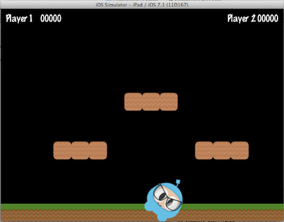
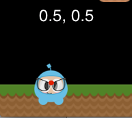
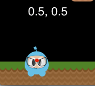
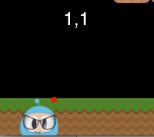
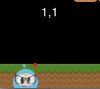
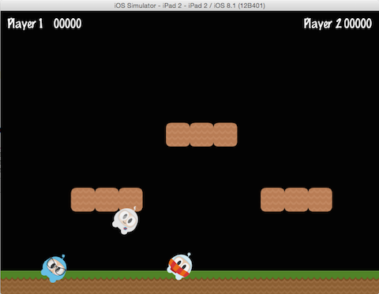

Basic Cocos2d-x Concepts
This chapter assumes you've just gotten started with Cocos2d-x, and are ready to start working on the game of your dreams. Don't worry, it will be fun!
Let's get started!
Cocos2d-x is a cross-platform game engine. A game engine is a piece of software that provides common functionality that all games need. You might have heard this referred to as an API or framework but in this guide, we'll be calling it a 'game engine'.
Game engines include many components that when used together will help speed up development time, and often perform better than homemade engines. A game engine is usually comprised of some or all of the following components: a renderer, 2d/3d graphics, collision detection, a physics engine, sound, controller support, animations and more. Game engines usually support multiple platforms thus making it easy to develop your game and then deploy it to multiple platforms without much overhead at all.
Since Cocos2d-x is a game engine, it provides a simplified API for developing cross-platform mobile and desktop games. By encapsulating the power inside an easy to use API, you can focus on developing your games and worry less about the implementation of the technical underpinnings. Cocos2d-x will take care of as much or as little of the heavy lifting as you want.
Cocos2d-x provides Scene, Transition, Sprite, Menu, Sprite3D, Audio
objects and much more. Everything you need to create your games are included.
Main Components
It might seem overwhelming at first, but getting started with Cocos2d-x is
simple. Before we dive into depth we must understand some of the concepts
Cocos2d-x utilizes. At the heart of Cocos2d-x are Scene, Node, Sprite,
Menu and Action objects. Look at any of your favorite games, and you will
see all of these components in one form or another!
Let's have a look. This might look a bit similar to a very popular game you might have played:

Let's take another look, but splitting up the screenshot and identifying the components used to build it:

You can see a menu, some sprites and labels, which all have an equivalent in Cocos2d-x. Take a look at a few of your own game design documents,and see what components you have, you'll probably have a few that match up.
Director
Cocos2d-x uses the concept of a Director, just like in a movie! The Director
controls the flow of operations and tells the necessary recipient what to do.
Think of yourself as the Executive Producer and you tell the Director what
to do! One common Director task is to control Scene replacements and
transitions. The Director is a shared singleton (effectively, there's only one
instance of the class at a time) object that you can call from anywhere in your
code.
Here is an example of a typical game flow. The Director takes care of
transitioning through this as your game criteria decides:

You are the director of your game. You decide what happens, when and how. Take charge!
Scene
In your game you probably want a main menu, a few levels and an ending scene.
How do you organize all of these into the separate pieces they are? You guessed
it, Scene. When you think about your favorite movie you can see that it's
distinctly broken down into scenes, or separate parts of the story line. If we
apply this same thought process to games, we should come up with at least a few
scenes no matter how simple the game is.
Taking another look at the familiar image from earlier:
This is a main menu and it is a single Scene. This scene is made up of
several pieces that all fit together to give us the end result. Scenes are drawn
by the renderer. The renderer is responsible for rendering sprites and
other objects into the screen. To better understand this we need to talk a bit
about the scene graph.
Scene Graph
A scene graph is a data structure that arranges a graphical scene. A
scene graph contains Node objects in a tree (yes, it is called
scene graph, but it is actually represented by a tree) structure.

It sounds and looks complicated. I'm sure you are asking why should you care about this technical detail if Cocos2d-x does the heavy lifting for you? It really is important to understand how Scenes are drawn by the renderer.
Once you start adding nodes, sprites and animations to your game, you want to make sure you are drawing the things you expect. But what if you are not? What if your sprites are hidden in the background and you want them to be the foremost objects? No big deal, just take a step back and run through the scene graph on a piece of paper, and I bet you find your mistake easily.
Since the Scene Graph is a tree; you can walk the tree. Cocos2d-x uses the in-order walk algorithm. An in-order walk is the left side of the tree being walked, then the root node, then the right side of the tree. Since the right side of the tree is rendered last, it is displayed first on the scene graph.

The scene graph is easily demonstrated, let's take a look at our game scene broken down:
Would be rendered as a tree, simplified to the following:

Another point to think about is elements with a negative z-order are on the left side of the tree, while elements with a positive z-order are on the right side. Keep this in consideration when ordering your elements! Of course, you can add elements in any order, and they're automatically sorted based upon a customizable z-order.
Building on this concept, we can think of a Scene as a collection of
Node objects. Let's break the scene above down to see the scene graph uses
the z-order to layout the Scene:

The Scene on the left is actually made up of multiple Node objects
that are given a different z-order to make them "stack" on top of each other.
In Cocos2d-x, you build the scene graph using the addChild() API call:
// Adds a child with the z-order of -2, that means
// it goes to the "left" side of the tree (because it is negative)
scene->addChild(title_node, -2);
// When you don't specify the z-order, it will use 0
scene->addChild(label_node);
// Adds a child with the z-order of 1, that means
// it goes to the "right" side of the tree (because it is positive)
scene->addChild(sprite_node, 1);
// Adds a child with the z-order of -2, that means
// it goes to the "left" side of the tree (because it is negative)
scene.addChild(title_node, -2);
// When you don't specify the z-order, it will use 0
scene.addChild(label_node);
// Adds a child with the z-order of 1, that means
// it goes to the "right" side of the tree (because it is positive)
scene.addChild(sprite_node, 1);
Sprites
All games have Sprite objects, and you may or may not realize what they are.
Sprites are the objects that you move around the screen.
You can manipulate them. The main character in your game is probably a
Sprite. I know what you might be thinking - isn't every graphical object
a Sprite? No! Why? Well a Sprite is only a Sprite if you move it around. If you
don't move it around it is just a Node.
Taking another look at the image from above, let's point out what are Sprites and what are Nodes:

Sprites are important in all games. Writing a platformer, you probably have
a main character that is made by using an image of some sort. This is
a Sprite.
Sprites are easy to create and they have configurable properties
like: position, rotation, scale, opacity, color and more.
// This is how to create a sprite
auto mySprite = Sprite::create("mysprite.png");
// this is how to change the properties of the sprite
mySprite->setPosition(Vec2(500, 0));
mySprite->setRotation(40);
mySprite->setScale(2.0); // sets both the scale of the X and Y axis uniformly
mySprite->setAnchorPoint(Vec2(0, 0));
// This is how to create a sprite
var mySprite = new cc.Sprite(res.mySprite_png);
// this is how to change the properties of the sprite
mySprite.setPosition(cc._p(500, 0));
mySprite.setRotation(40);
mySprite.setScale(2.0); // sets both the scale of the X and Y axis uniformly
mySprite.setAnchorPoint(cc._p(0, 0));
Let's illustrate each property, consider the following screenshot from the example code for this chapter:

If we set the position using mySprite->setPosition(Vec2(500, 0));:

Note that the Sprite position has changed from its original position to the
new position that we specified.
If we now set a new rotation, using mySprite->setRotation(40);:

... you can see that the Sprite has been rotated to the new amount that was
specified.
If we now specify a new scale using mySprite->setScale(2.0);:

Again, we can see that the Sprite now has changed according to our code
changes.
Lastly, all Node objects (since a Sprite is a subclass of Node) have a
value for anchor point. We haven't talked about this yet, so now is a good
time. You can think of anchor point as a way of specifying what part of the
sprite will be used as a base coordinate when setting the position of it.
Using the character from our example game, and setting the anchor point to 0, 0 using:
mySprite->setAnchorPoint(Vec2(0, 0));
mySprite.setAnchorPoint(cc._p(0, 0));
would result in the lower left corner of our sprite being used as the basis for any setPosition() call. Let's see a few of these in action:

 
  

Take a look at the red dot in each picture. This red dot illustrates where the anchor point is!
As you can see anchor point is very useful when positioning Nodes. You
can even adjust the anchor point dynamically to simulate effects in your
game.
We really can tweak just about every aspect of the Sprite. But, what if we
wanted to have these same types of changes occur in an automated, time
determined manner? Well, keep reading...
Actions
Creating a Scene and adding Sprite objects on the screen is only part
of what we need to do. For a game to be a game we need to make things move
around! Action objects are an integral part of every game. Actions allow the
transformation of Node objects in time space. Want to move a Sprite
from one Point to another and use a callback when complete? No problem!
You can even create a Sequence of Action items to be performed on a
Node. You can change Node properties like position, rotation and scale.
Example Actions: MoveBy, Rotate, Scale. All games use Actions.
Taking a look at the sample code for this chapter, here are Actions in work:
and after 5 seconds the sprite will move to a new position:
Action objects are easy to create:
auto mySprite = Sprite::create("Blue_Front1.png");
// Move a sprite 50 pixels to the right, and 10 pixels to the top over 2 seconds.
auto moveBy = MoveBy::create(2, Vec2(50,10));
mySprite->runAction(moveBy);
// Move a sprite to a specific location over 2 seconds.
auto moveTo = MoveTo::create(2, Vec2(50,10));
mySprite->runAction(moveTo);
var mySprite = new cc.Sprite(res.mySprite_png);
// Move a sprite 50 pixels to the right, and 10 pixels to the top over 2 seconds.
var moveBy = new cc.MoveBy(2, cc._p(50,10));
mySprite.runAction(moveBy);
// Move a sprite to a specific location over 2 seconds.
var moveTo = new cc.MoveTo(2, cc._p(50,10));
mySprite.runAction(moveTo);
Sequences and Spawns
With moving Sprite objects on the screen we have everything we need to create
our game, right? Not quite. What about running multiple Actions? Yes,
Cocos2d-x handles this too in a few different ways.
Just like it sounds, a Sequence is multiple Action objects run in a specified
order. Need to run the Sequence in reverse? No problem, Cocos2d-x handles
this with no additional work.
Take a look at the flow of an example Sequence for moving a Sprite
gradually:

This Sequence is easy to make:
auto mySprite = Node::create();
// move to point 50,10 over 2 seconds
auto moveTo1 = MoveTo::create(2, Vec2(50,10));
// move from current position by 100,10 over 2 seconds
auto moveBy1 = MoveBy::create(2, Vec2(100,10));
// move to point 150,10 over 2 seconds
auto moveTo2 = MoveTo::create(2, Vec2(150,10));
// create a delay
auto delay = DelayTime::create(1);
mySprite->runAction(Sequence::create(moveTo1, delay, moveBy1, delay.clone(),
moveTo2, nullptr));
var mySprite = new cc.Node();
// move to point 50,10 over 2 seconds
var moveTo1 = new cc.MoveTo(2, cc._p(50,10));
// move from current position by 100,10 over 2 seconds
var moveBy1 = new cc.MoveBy(2, cc._p(100,10));
// move to point 150,10 over 2 seconds
var moveTo2 = new cc.MoveTo(2, cc._p(150,10));
// create a delay
var delay = new cc.DelayTime(1);
mySprite.runAction(Sequence.create(moveTo1, delay, moveBy1, delay.clone(),
moveTo2));
This example runs a Sequence, in order, but what about running all the
specified Actions at the same time? Cocos2d-x supports this too and it
is called Spawn. Spawn will take all the specified Action objects and
executes them at the same time. Some might be longer than others, so they won't
all finish at the same time if this is the case.
auto myNode = Node::create();
auto moveTo1 = MoveTo::create(2, Vec2(50,10));
auto moveBy1 = MoveBy::create(2, Vec2(100,10));
auto moveTo2 = MoveTo::create(2, Vec2(150,10));
myNode->runAction(Spawn::create(moveTo1, moveBy1, moveTo2, nullptr));
var myNode = new cc.Node();
var moveTo1 = new cc.MoveTo(2, cc._p(50,10));
var moveBy1 = new cc.MoveBy(2, cc._p(100,10));
var moveTo2 = new cc.MoveTo(2, cc._p(150,10));
myNode.runAction(Spawn.create(moveTo1, moveBy1, moveTo2));
Why Spawn actions? Is there ever a reason? Sure! What if your main
character has multiple Actions when obtaining a power up? Maybe beating
the boss at the end of a level has multiple Actions that need to happen
to end the level.
Parent Child Relationship
Cocos2d-x uses a parent and child relationship. This means that properties
and changes to the parent node are applied to its children. Consider a single
Sprite and then a Sprite that has children:

With children, changing the rotation of the parent will also change the rotation to all children:

auto myNode = Node::create();
// rotating by setting
myNode->setRotation(50);
var myNode = new cc.Node();
// rotating by setting
myNode.setRotation(50);
Just like with rotation, if you change the scale of the parent the children will also get scaled:

auto myNode = Node::create();
// scaling by setting
myNode->setScale(2.0); // scales uniformly by 2.0
var myNode = new cc.Node();
// scaling by setting
myNode.setScale(2.0); // scales uniformly by 2.0
Not all changes to the parent are passed down to its children. Changing the parent anchor point only affects transform operations (scale, position, rotate, skew, etc...) and does not affect children positioning. In fact, children will be always added to the bottom-left (0,0) corner of its parent.
Logging as a way to output messages
Sometimes, when your app is running, you might wish to see messages being written to the console for informational or debug purposes. This is built into the engine, using log(). Example:
// a simple string
log("This would be outputted to the console");
// a string and a variable
string s = "My variable";
log("string is %s", s);
// a double and a variable
double dd = 42;
log("double is %f", dd);
// an integer and a variable
int i = 6;
log("integer is %d", i);
// a float and a variable
float f = 2.0f;
log("float is %f", f);
// a bool and a variable
bool b = true;
if (b == true)
log("bool is true");
else
log("bool is false");
And, as expected, if you prefer you can use std::cout in place of log(), however, log() might offer easier formatting of complex output.
// a simple string
cc.log("This would be outputted to the console");
// outputting more than a simple string
var pos = cc._p(sender.x, sender.y);
cc.log("Position x: " + pos.x + ' y:' + pos.y);
Conclusion
We have gone through a lot of Cocos2d-x concepts. Take a deep breath. Don't worry. Just dive in with your ideas and take it one step at a time. Cocos2d-x and programming in general are not skills that are learned overnight. These take practice and understanding. Remember that the forums are also there to help you with questions.